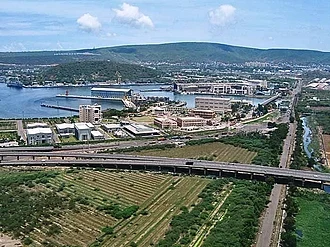
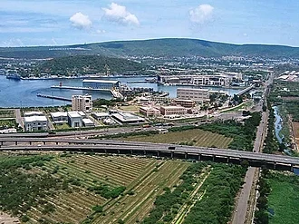

Andhra Pardesh
Andhra Pradesh is a state on the east coast of southern India. It is the seventh-largest state and the tenth-most populous in the country. Telugu, one of the classical languages of India, is the most widely spoken language in the state, as well as its official language
 
